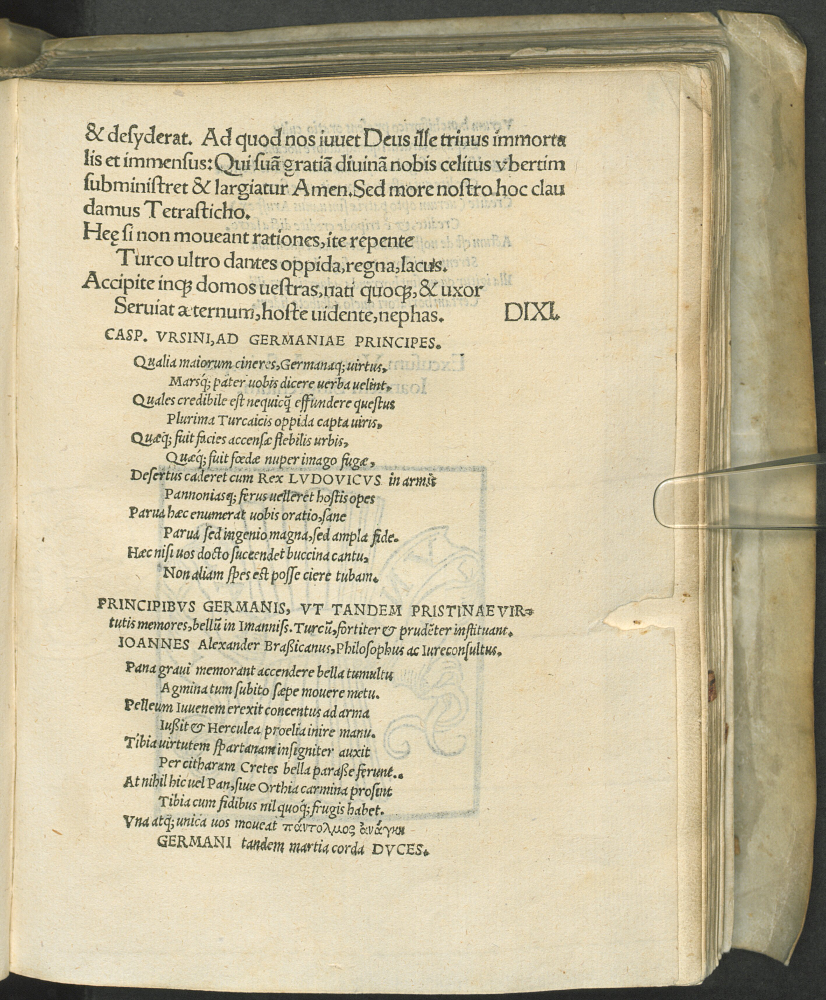
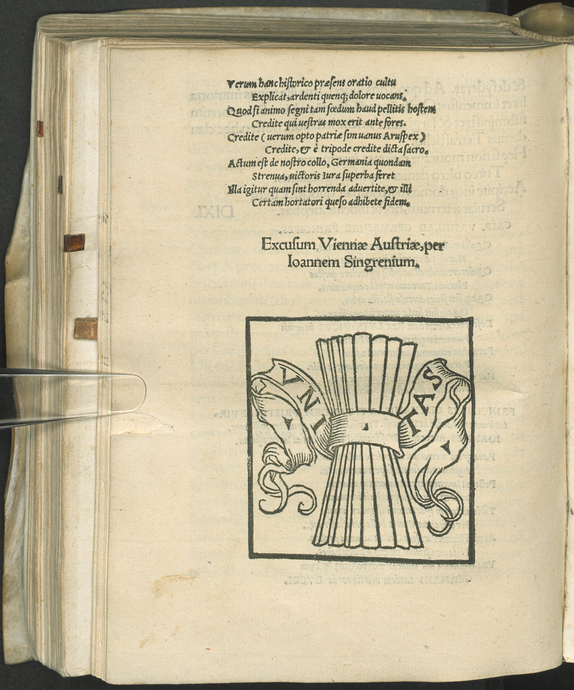

Spießheimer 8 (Johannes Köll)
Faksimile


Transkription
Principibus Germanis, ut tandem pristinae virtutis memores bellum in imannissimum Turcum, fortiter et prudenter instituant. Joannes Alexander Braßicanus, Philosophus ac Iureconsultus.
Pana gravi memorant accendere bella tumultu
Agmina tum subito saepe movere metu.
Peleum Iuvenem erexit concentus ad arma
Iussit et Herculea proelia inire manu.
Tibia virtutem spartanam insigniter auxit
Per citharam Cretes bella parasse ferunt.
At nihil hic vel Pan, sive Orthia carmina prosint
Tibia cum fidibus nil quoque frugis habet.
Una atque unica vos moveat πἂντολμος ἀνάγκη
Germani tandem martia corda duces.
Verum hanc historico praesens oratio cultu
Explicat, ardenti quemquem dolore vocans.
Quod si animo segni tam foedum haud pellitis hostem
Credite qui vestras mox erit ante fores.
Credite (verum opto patriae sim vanus Aruspex)
Credite, et e tripode credite dicta sacro.
Actum est de nostro collo, Germania quondam
Strenua, victoris Iura superba feret
Illa igitur quam sint horrenda advertite, et illi
Certam hortatori quaeso adhibete fidem.
Übersetzung
Johannes Alexander Köll, Philosoph und Rechtskundiger, an die deutschen Fürsten, sich endlich an die ehemalige Tugend zu erinnern und tapfer und klug Krieg gegen den überaus grausamen Türken anzuordnen.
Sie berichten, dass Pan mit schlimmem Aufruhr Kriege entzündet und dann oft plötzlich mit Furcht die Truppen bewegt. Der Gesang ermutigte den jungen Peleus zu den Waffen und befahl <ihm>, mit der Hand herkuleische Schlachten zu beginnen. Die Flöte vergrößerte die Tugend der Spartaner außerordentlich und man berichtet, dass die Kreter unter Kitharaspiel Kriege bereitet haben. Aber selbt Pan oder orthische Gesänge dürften hier nichts nützen, auch die Flöte mit der Lyra hat keinen Ertrag. Einzig und allein die allwagende Notwendigkeit könnte euch bewegen, ihr Führer Deutschlands in euren kriegerischen Herzen. Aber diese schildert die vorliegende Rede in historischem Schmuck, wen auch immer sie mit brennendem schmerz anfleht. Denn wenn ihr aufgrund eures trägen Geists einen so abscheulichen Feind nicht vertreibt, glaubt, wer bald vor euren Toren sein wird. Glaubt es (aber ich hoffe, dass ich der Heimat ein erfolgloser Seher bin), glaubt es und glaubt, was vom heiligen Dreifuß gesagt wurde. Um unseren Hals ist es geschehen, du einst entschlossenes Deutschland, jenes wird also das hochmütige Recht des Siegers ertragen, erkennt, wie schrecklich es ist, und bringt jenem Mahner, bitte, festes Vertrauen entgegen.
Metadaten
| Titel des Gedichts: | Principibus Germanis, ut tandem pristinae virtutis memores bellum in imannissimum Turcum, fortiter et prudenter instituant. Joannes Alexander Braßicanus, Philosophus ac Iureconsultus. |
| Autor der Gedichts: | Johannes Köll (Joannes Alexander Brassicanus) |
| Containerwerk: | Oratio Protreptica Ioannis Cuspiniani ad sacri Romani Imperii Principes et proceres, ut bellum suscipiant contra Turcum cum descriptione conflictus, nuper in Hungaria facti, quo periit Rex Hungariae Ludovicus. Et qua via Turcus Solomet ad Budam usque pervenerit ex Albagraeca, Cum enumeratione clara dotium, quibus a natura dotata est Hungaria, cum insertione multarum rerum annotatu dignissimarum. Lege lector et iudica in quam miseriam hodie Christianitas est coniecta, Wien 1526 |
| Autor des Containerwerks: | Johannes Spießheimer (Joannes Cuspinianus) |
| Gattung des Containerwerks: | Rhetorik, Rede, Protreptische Rede, Protrepticus |
| Erscheinungsjahr: | 1526 |
| Verschlagwortung: | Krieg, Türken, Deutschland, Germania, Fürsten, Pan, Lied bewegt zum Krieg, Peleus, Herkules, Sparta, Flöte, Lyra, Rede, Protreptik, Prophezeiung, Militär, Mahnung, Not, Handeln |